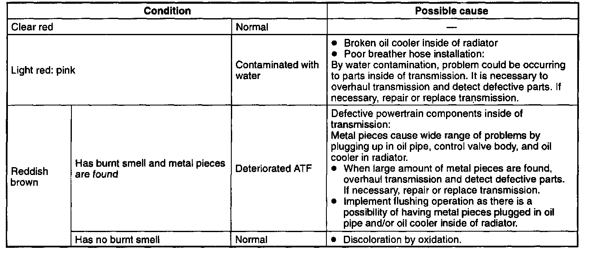
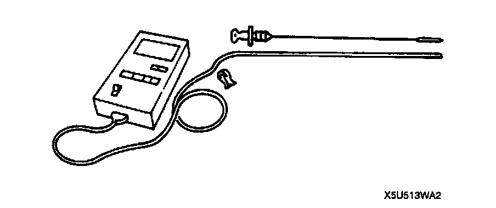
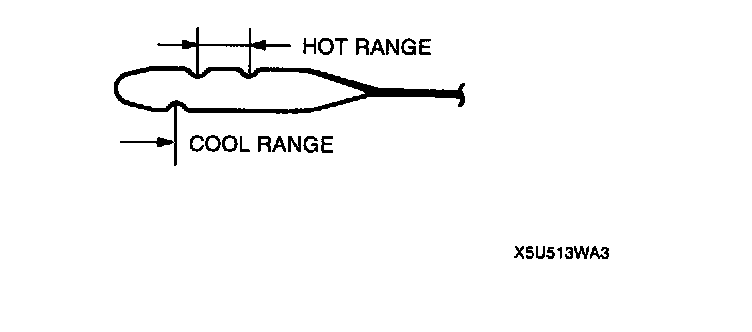

Fluid - A/T: Testing and Inspection
AUTOMATIC TRANSMISSION FLUID (ATF) INSPECTIONATF Condition Inspection
One way of determining whether the transmission should be disassembled is by noting:

1. If the ATF is muddy or varnished.
2. If the ATF smells strange or unusual.
3. If ATF condition is poor, repair as follows.
1) Dark color condition
^ Overhaul transmission and repair or replace parts as necessary.
2) Light pink and/or reddish-brown condition.
^ Replace ATF.
ATF Level Inspection
Caution: The ATF amount varies according to ATF's temperature. Therefore, when checking the ATF level or replacing the ATF, use a thermometer to measure the temperature then adjust the ATF amount to the specified level according to the specified temperature.
1. Park the vehicle on level ground.
2. Apply the parking brake and position wheel chocks securely to prevent the vehicle from rolling.

3. Adjust the length or thermistor probe measure the same as the dipstick and hold the probe with a paper holder. Insert into the filler tube and measure the temperature.
4. Inspect the ATF level before warming up the engine. In this case, use the cool range (15 - 25°C (59 - 77°F)).
5. Warm up the engine until the ATF reaches 60 - 70°C (140 - 158°F).
6. While depressing the brake pedal, shift the selector lever to each range (P - 1), pausing momentarily in each range.
7. Shift back to P position.

8. While the engine is idling, verify that the ATF level is in the HOT 65°C (149°F) range. Adjust ATF level to the specification, if necessary.
ATF type: M-III or equivalent (e.g. Dexron (R) II)